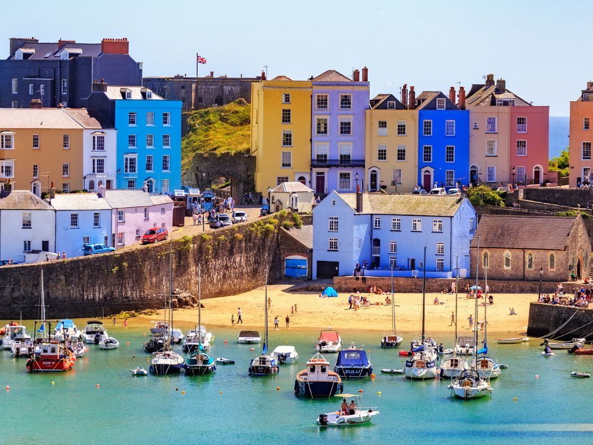

Tenby is a popular seaside town in Pembrokeshire. It is famous for its
colourful houses, beautiful sandy beaches, and historic harbour.
Many tourists visit Tenby during the summer.

Interesting Facts About Tenby
Tenby has four beautiful sandy beaches.
Boats travel from Tenby harbour to Caldey Island.
The town has historic walls built in the 13th century.